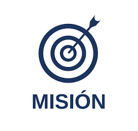
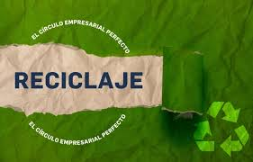
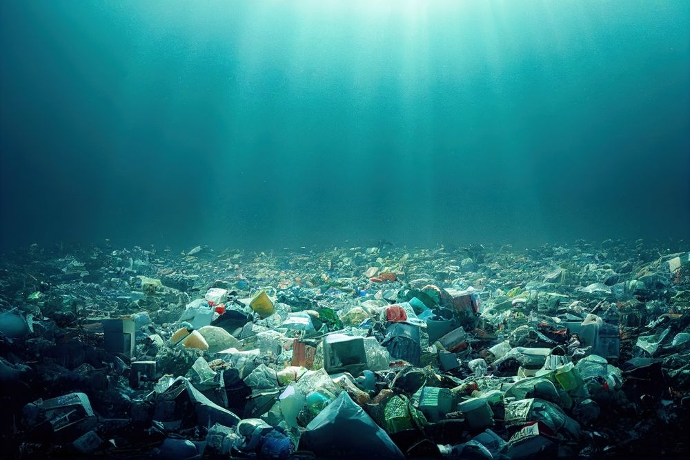
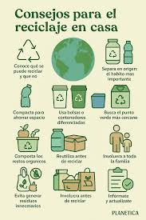

🌱 Eco Creators - Sobre Nosotros 🌎
Misión
Promover la conciencia ecológica y el aprovechamiento responsable de los recursos mediante una plataforma digital que oriente a la comunidad escolar en la reutilización creativa de materiales. Asimismo, brindar un acceso equitativo al conocimiento a través de un catálogo digital de libros, fortaleciendo la educación, la sustentabilidad y el compromiso social dentro del entorno académico.
Visión

Convertirse en un proyecto institucional de referencia que impulse la cultura del reciclaje y la economía circular, integrando la tecnología como herramienta para el desarrollo sustentable y la inclusión educativa. Se busca consolidar una comunidad escolar consciente, colaborativa y comprometida con el cuidado del medio ambiente y la difusión del conocimiento para un futuro más sostenible
¿Qué es el reciclaje?
El reciclaje es un proceso ambiental y productivo mediante el cual los materiales que ya fueron utilizados (como papel, vidrio, plástico, metales o cartón) se recolectan, clasifican, procesan y transforman para ser utilizados nuevamente en la fabricación de nuevos productos o materias primas. Este proceso forma parte de un modelo de gestión de residuos sostenible que busca disminuir la cantidad de basura enviada a vertederos o incineradoras, ahorrar energía y reducir el consumo de recursos naturales.
¿Por qué es bueno reciclar?

Reciclar es una de las prácticas más efectivas para cuidar el medio ambiente y los recursos naturales del planeta. Gracias al reciclaje se logra disminuir la cantidad de residuos que terminan en vertederos, mares o ríos, evitando así la contaminación del suelo y del agua. Además, reduce las emisiones de gases de efecto invernadero, que son responsables del cambio climático, ya que se utiliza menos energía al fabricar nuevos productos con materiales reciclados. El reciclaje también fomenta la economía circular, un modelo que busca reutilizar los recursos en lugar de desecharlos, promoviendo la innovación y la creación de empleos en sectores sostenibles. Por otro lado, ahorra materias primas y energía, ya que fabricar papel, vidrio o plástico a partir de materiales reciclados requiere menos recursos que hacerlo desde cero. Finalmente, reciclar educa y genera conciencia ambiental, ayudando a construir una sociedad más responsable con su entorno y comprometida con el futuro del planeta. - Fuente: BBVA - Qué es el reciclaje y por qué es importante reciclar
Consecuencias de no reciclar
No reciclar tiene consecuencias negativas tanto para el medio ambiente como para la salud humana. Cuando los residuos no se separan ni se reutilizan, terminan acumulándose en vertederos o contaminando los ecosistemas, liberando gases y sustancias tóxicas que afectan la calidad del aire y del agua. Los plásticos, por ejemplo, pueden tardar cientos de años en degradarse, y en ese proceso dañan gravemente a la fauna marina y terrestre, que los confunde con alimento. Además, al no reciclar, se incrementa la explotación de recursos naturales como el petróleo, los minerales y los bosques, lo que genera deforestación, pérdida de biodiversidad y un mayor impacto ambiental. También aumentan las emisiones de gases de efecto invernadero, contribuyendo al calentamiento global. A nivel social, no reciclar significa perder oportunidades de empleo en la industria del reciclaje y en proyectos ecológicos. A largo plazo, la acumulación de basura puede provocar problemas de salud pública, malos olores, proliferación de plagas y deterioro de la calidad de vida en las ciudades. - Fuente: ACNUR - ¿Cuáles son las consecuencias de no reciclar?
Recomendaciones
- Separar los residuos en orgánicos e inorgánicos.
- Usar contenedores de colores según el tipo de material.
- Evitar plásticos de un solo uso.
- Reutilizar envases y frascos.
- Reducir el consumo innecesario.
- Donar objetos en buen estado.
- Lavar materiales reciclables.
- No mezclar residuos peligrosos.
- Usar productos biodegradables o reciclados.
- Imprimir solo lo necesario.